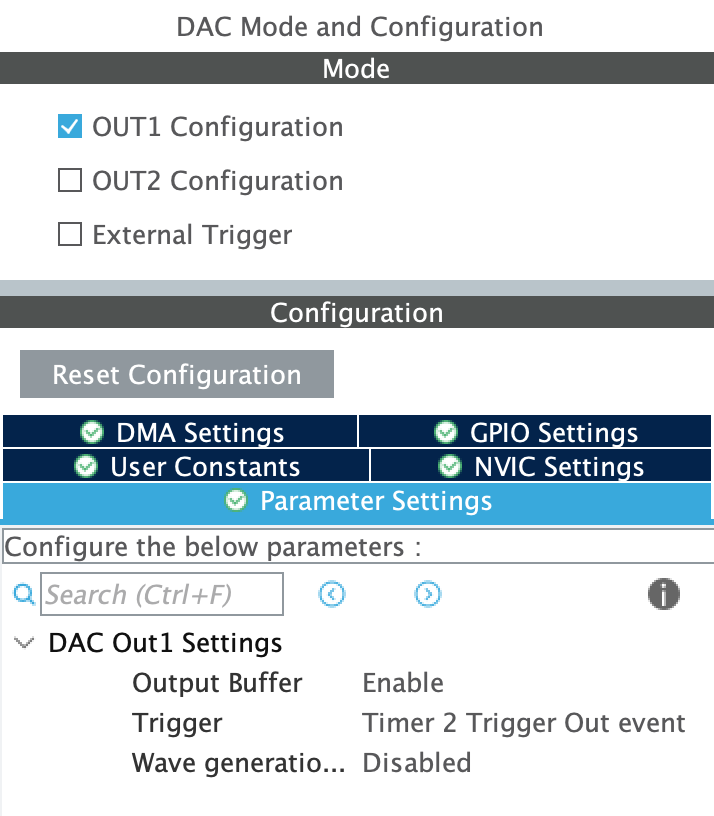

Diffusion
La dernière étape de notre chaine de traitement consiste à diffuser le son enregistré précédemment dans la mémoire de notre STM32. Pour ce faire, nous devons piloter le DAc via le DMA et générer le signal vers une sortie audio, casque, hauts-parleurs...
Methodes utilisation du DAC
Le DAC ou Digital-to-Analog Converter est un composant matériel qui permet de convertir des signaux numériques en signaux analogiques. Sur une STM32, il peut être utilisé pour produire des signaux analogiques pour des applications telles que la génération de formes d'onde, la synthèse audio, le contrôle de moteurs, etc
Le DAC peut être configuré pour fonctionner avec différentes résolutions (8, 10, 12 bits), des tensions de référence internes ou externes, et des modes de sortie de signal (unipolaire ou bipolaire).
Methodes amplificateur
Le signal de sortie peut être amplifié pour réhausser le signal. On utilise un amplificateur en spécifiant un gain. Pour déterminer ce dernier, on s'appuie sur la partie décimation. Nous avons determiné précedemment qu'un échantillon (une frame) allait de 0 à 64. Or le DAC a une résolution fixée à 12 bits ce qui impose une valeur entière max de 4096. On peut donc déterminer la valeur max du gain par le calcul : Gain_max = 4096/64 = 64 Le Gain max est donc de 64.
Mise en pratique
Pour utiliser le DAC sur la carte STM32 on réalise deux étapes clés :
Configuration du setup
On configure le DAC sur la carte en choisissant une sortie, par exemple OUT1 indiquant la pin PA4. Dans notre cas nous activons aussi le DMA et un timer, et un bouton pour jouer le signal enregistré.



Une fois la configuration enregistré, nous pouvons générer le code.
Ajout de l'amplification
Avant de générer le signal, nous avons fais le choix de l'amplifier en fixant la valeur de gain à 80, qui est un bon compromis pour rehausser le niveau du signal en minimisant la saturation.
for (int i = 0; i < PCM_NB_SAMPLE; i++){
pcmData[i] = pcmData[i] * GAIN;
}
Ajout dans le code
Dans la boucle While du code, on ajoute la condition pour jouer l'enregistrement.
/* USER CODE BEGIN WHILE */
while (1)
{
if (HAL_GPIO_ReadPin(GPIOA, GPIO_PIN_0)){
HAL_DAC_Start_DMA(&hdac, DAC_CHANNEL_1, (uint32_t*)pcmData, PCM_NB_SAMPLE, DAC_ALIGN_12B_R);
HAL_Delay(NB_SEC_OUTPUT*1000);
HAL_DAC_Stop_DMA(&hdac, DAC_CHANNEL_1);
}
HAL_Delay(500);
/* USER CODE END WHILE */
}
Si l'utilisateur appuie sur le bouton pin0 de la carte, on lance la diffusion du signal avec la fonction HAL_DAC_Start_DMA(). En paramètre, on a renseigné le channel, la data, le nombre d'échantillons et la résolution de notre DAC.
Le signal se joue sur HAL_Delay(NB_SEC_OUTPUT*1000); soit une seconde, ce qui représente la limite de la durée du signal stockable.
Enfin, une fois le signal joué on stoppe le DAC à l'aide de la fonction DAC HAL_DAC_Stop_DMA().